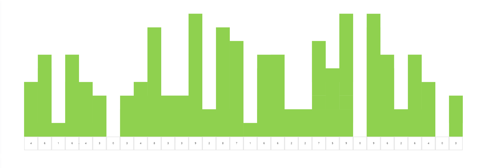
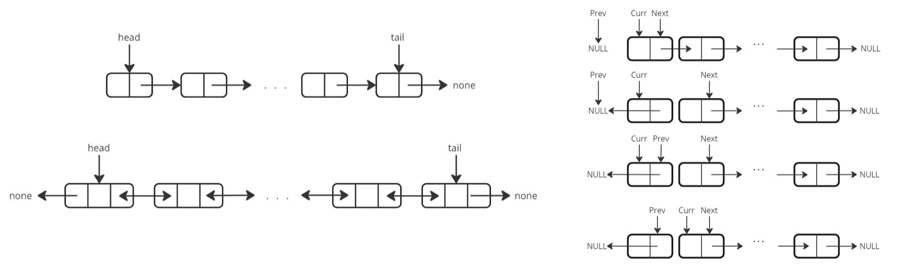

Data Structures and Algorithms
High-level programming languages allow us to abstract away the details of reading and writing binary values to and from registers in system memory. They do so via the use of primitive and abstract data types: formats for information storage and retrieval in code.
An algorithm is a finite set of rigorous instructions that transforms a set of inputs into a set of outputs. We seek to design algorithms that implement these desired input-output pairings with minimum run-time cost and memory usage
A data structure is a format for information storage and retrieval. Abstract data structures are constructred from sets of primitive data types. Examples of primitive data types include int, char, bool, array, etc. Examples of abstract data structures include linked lists, dictionaries, trees, stacks, heaps, graphs, etc.
An array is a primitive data type with a linear ordering (by index). Arrays can be uni-dimensional or multi-dimensional. Arrays can be of fixed or dynamic size. It can be helpful to color-code subsets of an array, and visualise numerical values as heights in a histogram, 
A linked list is a data structure containing a linear set of data elements. Unlike an array, the ordering of data elements in a linked list does not necessarily correspond to their ordering in physical memory. Linked lists can be singly or doubly linked, 